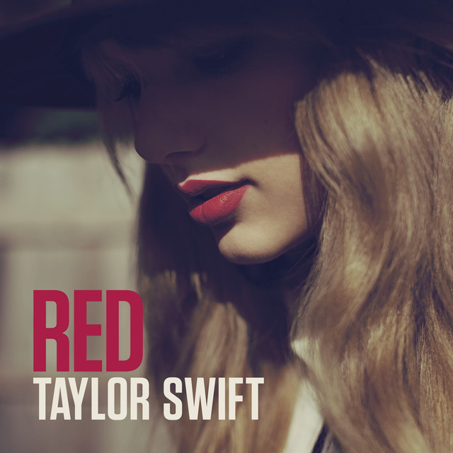
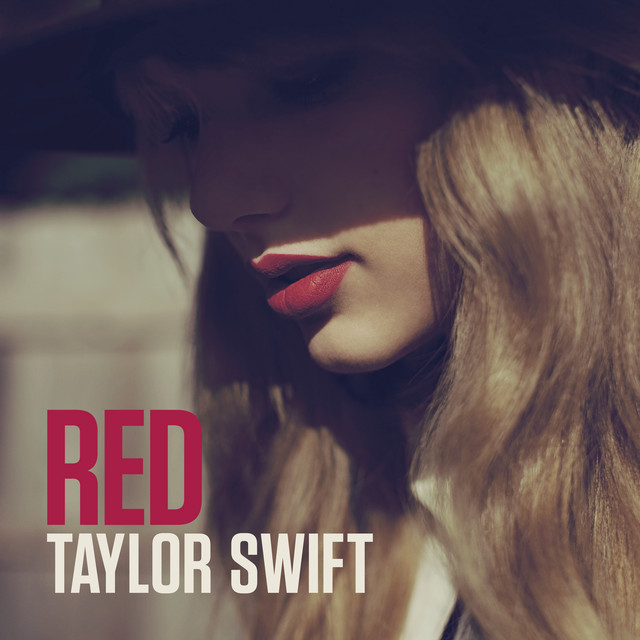

I have multiple musical artists that I really like. Presently I’have been obsessed with paramore. This band is only one of the many other artists I like. The list includes Taylor Swift, Masie Peters, StrayKids, BoyWithUke and many more. There is one artist that I love more than the rest. They are StrayKids. Even though they are a kpop band with music mostly in the Korean language, I relate a lot to their lyrics.
Taylor swift has a very long discography. If I wanted to list all of them it would take a really long time. Instead to make it easier to read I will only be adding the names of her albums on this page. Each album will take you to a different page with more comprehensive information regarding song, length and even lyrics. There will also be a list of awards won by Taylor Swift since she is a world reknown artist.


 



Bangchan is the leader of the band. He was 13 when he started his training and debuted at the age of 20. He was training for almost 7 years before debut. He went through many hardships to get the chance to debut.
Real Name: Christopher Bang
Korean Name: Bang Chan
Current Age: 26
Birthday: October 13, 1997
Positions: Leader, Songwriter, Composer, Producer, Lead Vocalist, Lead Dancer, Rapper
Sub-Unit: 3RACHA
Trainee Period: 7 years
Lee Know is the second oldest member of the band. He was an aspiring dancer before he started training at JYP. In his earlier career, Lee Know worked as a back-up dancer for the world reknown BTS. This kickstart his current career. He was a trainee for only 1 year before his debut, unlike Bang Chan’s 7 years.
Real Name: Lee Minho
English Name: Rhino
Current Age: 24
Birthday: October 25, 1998
Positions: Main Dancer, Vocalist, Rapper, Visual
Sub-Unit: DanceRACHA
Trainee Period: 1 year
He is not only part of Stray Kids but also part of a sub-unit within the mand. This sub-unit is called 3Racha. Changbin is a lyricist producer and a rapper in both the sub-unit and the main band. He is joined by Bangchan and another member to make up 3Racha.
Real Name: Seo Changbin
English Name: Lewis
Current Age: 23
Birthday: August 11, 1999
Positions: Main Rapper, Sub-Vocalist, Producer
Sub-Unit: 3RACHA
Trainee Period: 2 years
Hynjin is a very talented member of Stray Kids. He is currently the main dancer in the band. Hyunjin was scouted for his visuals (looks) but he wanted to prove he had skill. Therefore he picked up dancing even he never danced before. His skills improved rapidly and now he is part
of the dance sub-unit lead by Lee Know.Real Name: Hwang Hyunjin
English Name: Sam
Current Age: 23
Birthday: March 20, 2000
Positions: Main Dancer, Lead Rapper, Sub-Vocalist, Visual
Sub-Unit: DanceRACHA
Trainee Period: 2 years
HAN is the last member of 3Racha. He is also the youngest member of the sub-unit. His name in the unit is J.ONE. HAN not only writes, produces and arranges music for the unit and main band but he also has solo songs.
Real Name: Han Jisung
English Name: Peter
Current Age: 22
Birthday: September 14, 2000
Positions: Main Rapper, Lead Vocalist, Songwriter, Composer
Sub-Unit: 3RACHA
Trainee Period: 3 years
Felix is a member of Stray Kids that could be considered a foreigner. He was born and raised in Sydney, Australia. He moved to Korea to be a part of JYP and become an idol. In his early trainee days he had trouble learning korean properly. Since Bang Chan is also australian he pused Felix a lot during their pre-debut days. However Felix forgave him.
Real Name: Felix Lee
Korean Name: Lee Yongbok
Current Age: 22
Birthday: September 15, 2000
Positions: Main Dancer, Lead Rapper, Sub-Vocalist
Sub-Unit: DanceRACHA
Trainee Period: 1 year
Seungmin is the second youngest member but he has an ’old soul’. He is mature but also has a surpriing fun side. He likes teasing his older members, espicially Bang Chan. Seungmin also has a caring personality. He enjoys taking care of the other membes and espicially I.N. Since Seungmin only has an older sister, he is happy to have I.N. as a younger brother.
Real Name: Kim Seungmin
English Name: Sky
Current Age: 22
Birthday: September 22, 2000
Positions: Main Vocalist
Sub-Unit: VocalRACHA
Trainee Period: 1 year
Laslty there is I.N. the youngest member of Stray Kids. He was a trainee for 2 years before being picked by Bancg Chan to join Stray Kids. I.N. has a mischevious side that he enjoys showing to the other members. His nickname was ’Baby Bread’ sice he was the youngest and the cutest. From time to time though fans will call him toast because sometimes I.N. looks very cool instead of very cute.
Real Name: Yang Jeongin
English Name: Bob
Current Age: 22
Birthday: February 8, 2001
Positions: Vocalist, Maknae
Sub-Unit: VocalRACHA
Trainee Period: 2 years
A simple but interesting thing to note about the name of the band relates to the names of
the members. The band name ‘AJR’ comes from the first names of the three members. Something
else to look for in the names of the members are their last names. The same last name might
indicate to people that the members might be siblings. You would be correct if you though
this. This small indie band started a very long time ago in the streets of New York. They
would busk in the streets for hours, and now they are a billboard famous band to look up to.
Return to the top of the page